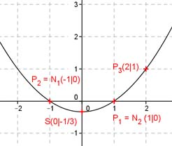

Aufgabe 84 Bestimmen Sie die Koordinaten des Scheitelpunktes S und der Nullstellen N einer Parabel der Form y = ax2 + bx + c, wenn ihr Graph durch die Punkte P1(1|0), P2(-1|0) und P3(2|1) geht? P1 ergibt: x = 1 und y = 0 Eingesetzt in y = ax2 + bx + c 0 = a * 12 + b * 1 + c a + b + c = 0 (1) P2 ergibt: x = -1 und y = 0 Eingesetzt in y = ax2 + bx + c 0 = a * (-1)2 + b * (-1) + c a – b + c = 0 (2) P3 ergibt: x = 2 und y = 1 Eingesetzt in y = ax2 + bx + c 1 = a * 22 + b * 2 + c 4a + 2b + c = 1 (3) Lösung des linearen Gleichungssystems mit (1) , (2) und (3): (1) + (2) ergibt a + b + c = 0 a – b + c = 0 ----------------- 2a + 2c = 0 (4) (1) * (-2) + (3) ergibt -2a – 2b – 2c = 0 4a + 2b + c = 1 ------------------- 2a – c = 1 (5) (5) * 2 + (4) ergibt: 4a + 2c = 2 2a – 2c = 0 ------------- 6a = 2 |:6 1 a = --- 3 In (5) eingesetzt: 1 2 * --- – c = 1 |+c 3 2 --- = c + 1 |-1 3 2 --- - 1 = c 3 2 3 --- - --- = c 3 3 1 c = - --- 3 In (1) eingesetzt: 1 1 --- + b - --- = 0 3 3 b = 0 Gesuchte Funktion: 1 1 y = --- x2 - --- 3 3 Dies ist eine Parabel der Form y = ax2 + b mit dem Scheitelpunkt bei (0,b), hier 1 S(0|- ---) 3 Berechnung der Nullstellen, obwohl sie als Punktkoordinaten schon gegeben sind: 1 1 1 0 = --- x2 - --- |+ --- 3 3 3 1 1 1 --- = --- x2 | : --- 3 3 3 x2 = 1 |√ x = ± 1 N1(1|0) , N2(-1|0) 